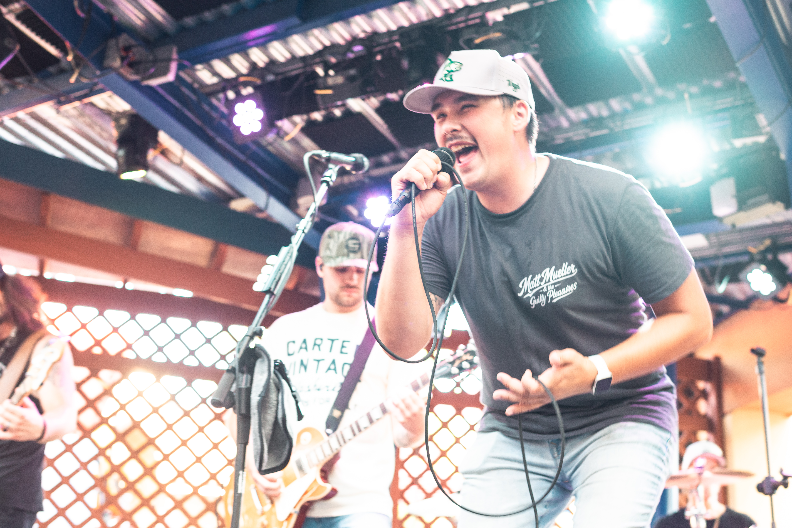

About
Minnesota's Redneck Rock N Roll cover band.
Whiskey Peddler takes classic country, alt-country, and rock hits and rebuilds them with grit, volume, and a live-wire energy that's built for a room full of people who came to move. This isn't a note-for-note tribute act — every song gets pushed harder and played louder than the original.
Whether it's a dive bar, a backyard party, or a packed festival stage, the band treats every show the same way: full effort, no filler. If a song's worth covering, it's worth covering like it matters.
The Band

Nate Addy
Rock Vocals
Age: 27
Hometown: Princeton, MN
Top 3 Artists: Eagles, Ted Nugent, Steve Miller Band
Hometown: Princeton, MN
Top 3 Artists: Eagles, Ted Nugent, Steve Miller Band

Matt Mueller
Country Vocals
Age: 24
Hometown: Austin, MN
Top 3 Artists: Garth Brooks, Cody Johnson, Parker McCollum
Hometown: Austin, MN
Top 3 Artists: Garth Brooks, Cody Johnson, Parker McCollum
Kory Klouse
Drums
Age: 24
Hometown: Rose Creek, MN
Top 3 Artists: Koe Wetzel, HARDY, Kolby Cooper
Hometown: Rose Creek, MN
Top 3 Artists: Koe Wetzel, HARDY, Kolby Cooper
Taylor Madrinich
Electric Guitar
Age: 32
Hometown: West Bend, WI
Top 3 Artists: Nevertel, Bilmuri, Sleep Theory
Hometown: West Bend, WI
Top 3 Artists: Nevertel, Bilmuri, Sleep Theory
Trystin Kinkade
Bass
Age: 27
Hometown: Waseca, MN
Top 3 Artists: Whiskey Myers, Koe Wetzel, Cody Jinks
Hometown: Waseca, MN
Top 3 Artists: Whiskey Myers, Koe Wetzel, Cody Jinks